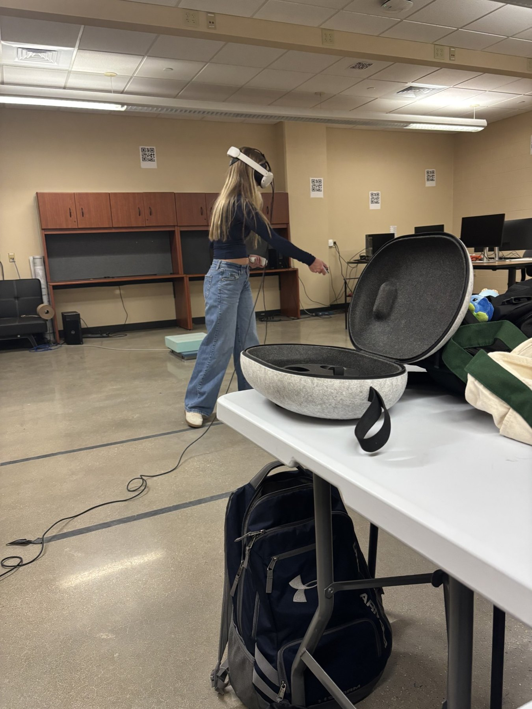
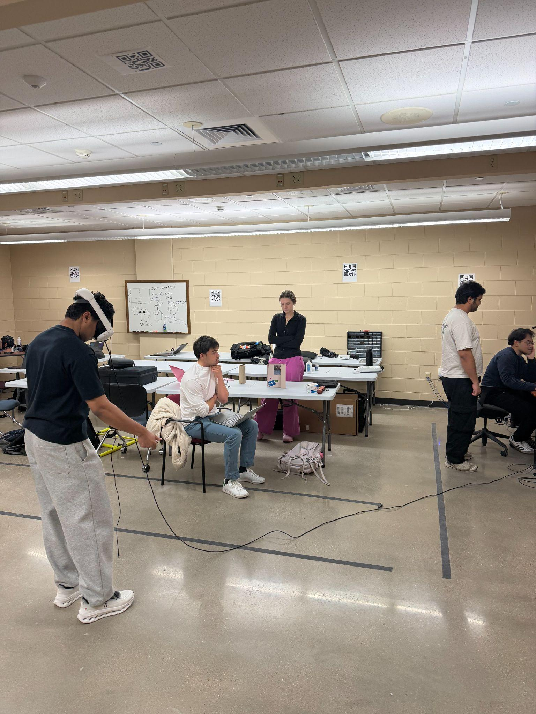
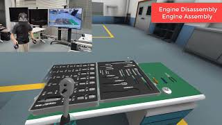
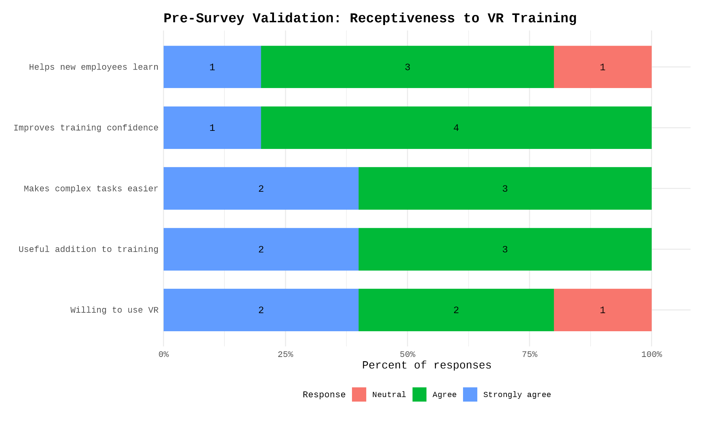
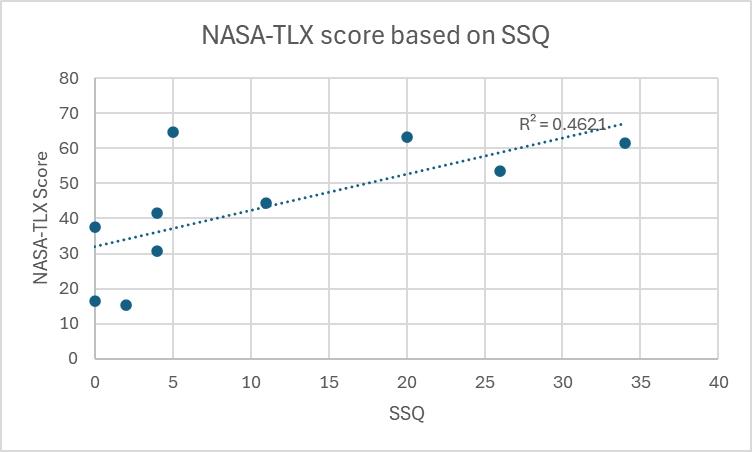

Measured manufacturing perceptions
We surveyed people with manufacturing or engineering experience to understand where they saw value in VR, where they expected discomfort, and whether VR should supplement or replace hands-on training.
Human Factors in Design and Evaluation | ISYE 552
For my Human Factors in Design and Evaluation class, our team studied how virtual reality could be used as a training tool for automotive manufacturing tasks. The project focused on a practical question: can VR help people learn engine assembly procedures, or does the headset, interface, and task design add too much workload for new users?

Project Overview
We designed the study around both perception and performance. First, we collected survey responses from people with manufacturing or engineering experience to understand whether they saw VR as useful, realistic, comfortable, and appropriate for workplace training. Then we ran an in-person experiment where engineering students used a Meta Quest headset to complete an engine assembly and disassembly simulation.
During the experiment, we observed how users interpreted instructions, followed visual cues, handled controller-based interactions, and asked for help. We measured task completion time, questions asked, assistance needs, NASA-TLX workload, cognitive load, cybersickness, presence, and exploratory ECG data. Instead of only asking whether users finished the task, we looked at how the training felt to use and where the design created friction.
Study Design
The evaluation connected what users believed about VR before training with how they actually performed and felt during a controlled assembly/disassembly simulation.
We surveyed people with manufacturing or engineering experience to understand where they saw value in VR, where they expected discomfort, and whether VR should supplement or replace hands-on training.
Participants completed an engine assembly/disassembly simulation while we tracked task time, questions asked, assistance needs, visual cue interpretation, and points of confusion.
We used NASA-TLX, cognitive load questions, cybersickness responses, presence ratings, qualitative notes, and exploratory ECG data to understand the human cost of the training experience.
Experiment Setup


Key Findings


Design Recommendations
The strongest takeaway was that performance metrics alone do not explain learning. More questions sometimes reflected deeper engagement, so the system needs support that helps users learn without breaking immersion.
Use tool-like controllers and motion sensing so VR tasks better match real manufacturing movements.
Add immediate question support and feedback so users can recover from confusion inside the training flow.
Improve written prompts, visual cues, and step sequencing to reduce preventable clarification questions.
Build in breaks, headset fit checks, and shorter training blocks to reduce cybersickness and eye strain.
Skills Applied
Survey design, participant protocol, task observation, and mixed-method evaluation.
Usability, workload, trust, presence, comfort, inclusivity, and user variability.
NASA-TLX, cognitive load, SSQ, completion-time analysis, correlation, and chart interpretation.
Turning findings into practical VR training recommendations for manufacturing environments.